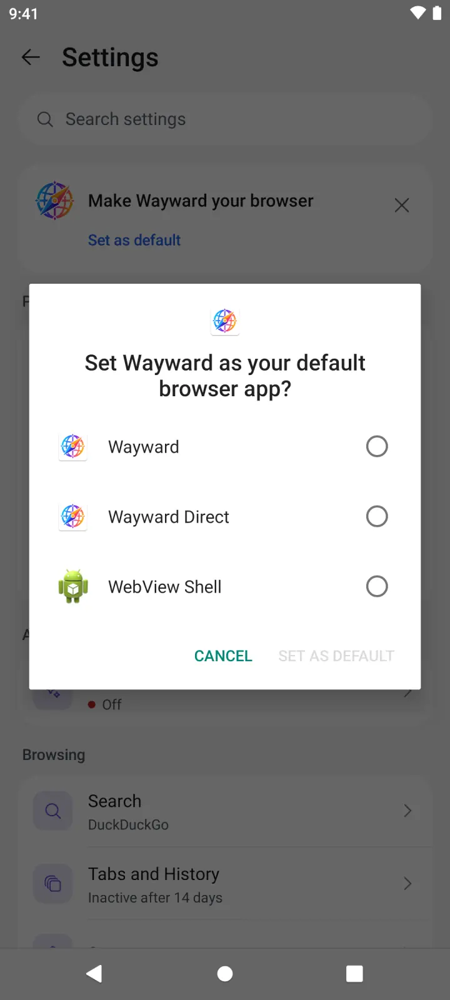
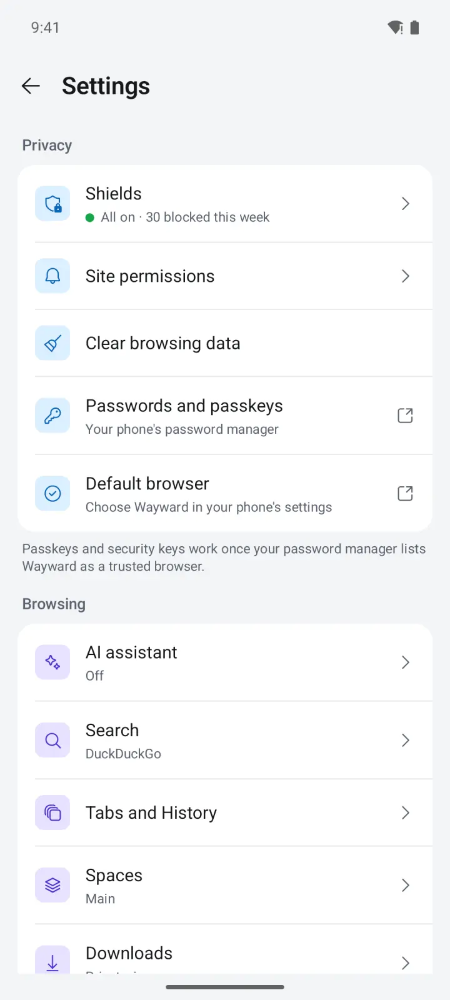

Make Wayward your default browser
How-to
Set Wayward as your default browser to open links from other apps (messages, email, social apps) with Shields protection.
From Wayward
- Open the ⋮ menu and tap Settings.
- At the top of Settings, tap the card Make Wayward your browser.
- Android asks whether to make Wayward your default browser app. Pick Wayward and confirm.


The card goes away once Wayward is your browser. If you'd rather not see it, tap its X. Either way, a Default browser row then sits at the end of the Privacy group in Settings. It says Wayward is your phone's browser, or Choose Wayward in your phone's settings if it isn't. Tapping it opens your phone's Default apps page.

If Android doesn't ask
Once you've said no to Android's question, Android stops showing it. Wayward then opens your phone's Default apps page instead. Look for the browser app there and pick Wayward.
The page has slightly different names on different phones. On most it's in your phone's Settings under Apps, then Default apps, then Browser app. If Wayward can't open that page, it says Look for Default apps in your phone's settings.
What you'll see
Links you tap in other apps now open in Wayward, each in a new tab. Some apps show links in a small preview window first instead of leaving the app; that window is Wayward too. See Links from other apps, and link previews.